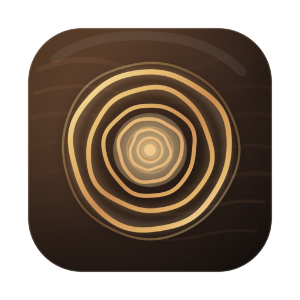

Timbre
Voice-to-text and text-to-speech, everywhere.
Why Timbre.
- Feather-light
- Timbre uses about 30MB of memory. Most dictation apps use ten times that. Your battery will thank you.
- Truly native
- Built from the ground up with Swift and SwiftUI. Timbre feels like part of your Mac because it is.
- Beautifully simple
- Voice-to-text and text-to-speech. No bloated dashboards, no enterprise upsells. Just the basics, done right.
- Works in any app
- Lives in your menu bar. Press a keyboard shortcut, start talking, and your words appear right where you're typing.
Pricing.
Start for free. Go unlimited for $5 a month.
Free
$0 / month
- Up to 5 hours of speech-to-text
- Up to 40,000 characters of text-to-speech
Unlimited
$5 / month
- Unlimited speech-to-text
- Unlimited text-to-speech